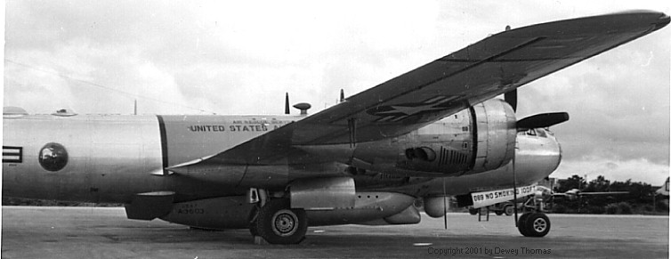

Archived from Wayback capture 20080905085643 for http://mywebpages.comcast.net/b29sinthekoreanwar/29rescu1.html. Retrieved 2026-02-24.
to Return to Index

B-29
Air Rescue, kadena AFB, Circa 1952
Dewey Thomas wrote: "Photo is one of ( 4) SB-29s
assigned to 2nd Air Rescue Sqdn, Flight D at Kadena AFB ,Okinawa;
picture taken about April 1952. (Note : Flight C,
had SA-16's & helicopters). As a rescue organization,we maintained
an
alert shack (tent) alongside an airplane for immediate
departure. The "routine" for the 4 planes was that each plane/crew
( in a rotation schedule) flew escort missions for
the bomb groups. Rescue acft "took-off" first, orbited off end of
runway
until last bomber had departed, then all flew together
to Korea. Upon return "we" would orbit off the approach end until all
bombers had landed---made for a long flight. In addition
,within our range of operation , we responded to any emergency of downed
acft at sea. The first few missions to Korea was with
full ammo; however, it was quickly learned--big mistake, so no more
ordnance--- the SB-29 boat/drag load was very high
and those first flights about didn't make it back-LOW fuel!"
Use your
browser's BACK button to return to the previous page